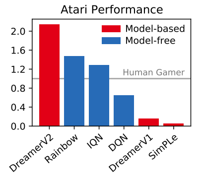
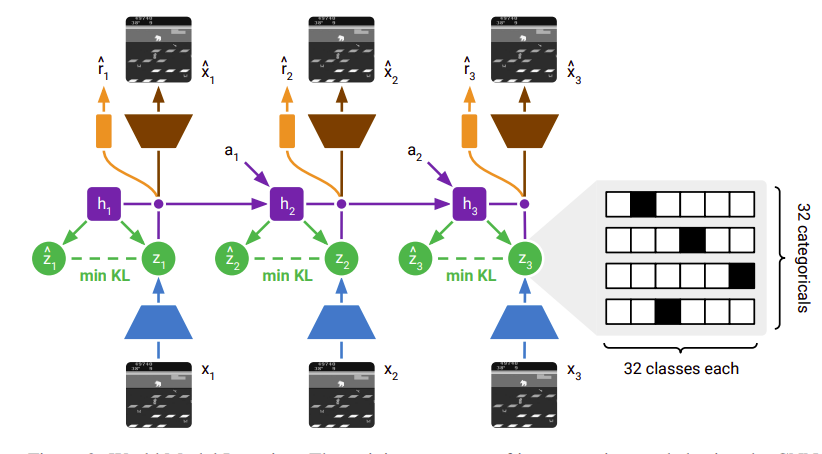
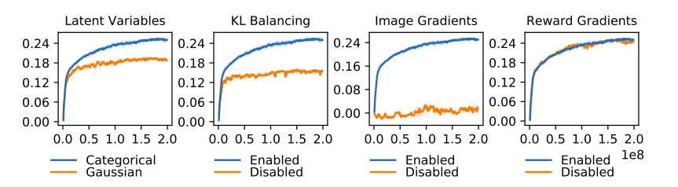

1 Imagination Wasn't Enough
My last blog post covered DreamerV1 and how it uses a learned world model to imagine future trajectories and train an Actor and Critic from those imagined experiences. DreamerV1 showed that an agent could use its own imagined world to solve long horizon tasks, while also improving sample efficiency and reducing the amount of computation needed compared to previous model based approaches.
That was already pretty impressive, but there was a problem.
DreamerV1 had been demonstrated mainly on continuous control environments. Atari was a completely different beast. Model free methods had already shown that they could perform extremely well on Atari, while model based methods were still struggling to learn world models that were good enough for these more complicated environments.
There had been some big successes with model based methods, most notably MuZero, which showed just how powerful a learned model could be. But DreamerV2 wanted to push the Dreamer idea further and see if it could actually compete on Atari.
DreamerV2 keeps the basic idea from V1. The agent still learns a world model, still imagines future trajectories inside that model, and still uses those imagined trajectories to train its Actor and Critic. But some important changes were made to the way the world model represents its latent states and how the Actor is trained, and those changes turned out to matter a lot. DreamerV2 achieved results that surpassed Rainbow and IQN, two of the strongest model free agents at the time, and became the first world model agent to reach human level performance on Atari, all on a single GPU.
This blog is going to be relatively short compared to the others because everything has been building on each other. If you haven't read my posts on World Models, PlaNet and DreamerV1, I would strongly recommend going through them first. A lot of the notation and ideas in this post come directly from those papers.
Alright, let me get into it.

2 The Latent State Goes Discrete
DreamerV1 used a continuous stochastic state $z_t$, where the model represented it with a Gaussian distribution defined by a mean and variance. During training, it sampled $z_t$ from this distribution and used the reparameterization trick so that gradients could still flow through the sampling process.
DreamerV2 changes this. Instead of using one continuous stochastic vector, the stochastic state $z_t$ is now made up of 32 categorical variables, with each variable having 32 possible classes, so each variable can choose one category out of 32, giving the model a $32 \times 32$ one hot representation of $z_t$.
The idea is to give the model a much richer discrete representation of the latent state, one that can capture features of the environment dynamics that might not come through as effectively in the continuous representation DreamerV1 used. The paper investigates why this works better through ablation experiments, and I will get into those later.
But changing $z_t$ from a continuous distribution to discrete categorical variables creates a new problem. DreamerV1 could use the reparameterization trick because its stochastic state was continuous, but with DreamerV2 the model has to sample discrete categories, and discrete sampling is not directly differentiable, so we cannot simply backpropagate through the sampled $z_t$ the same way anymore.
This is where the straight through estimator comes in. DreamerV2 uses straight through gradients to train the categorical latent variables, using the actual discrete sample during the forward pass while using a differentiable approximation during the backward pass, so gradients can still flow through the discrete representation. It is not a completely new concept, it is an established technique that DreamerV2 applies to its discrete world model.

3 Letting the Prior Catch Up
Some changes were also made to the KL divergence loss. In the standard KL objective, the KL term both trains the prior toward the posterior and regularizes the posterior toward the prior. But early in training the prior can be poorly learned, so forcing the posterior toward a bad prior can actually hurt the representation.
DreamerV2 addresses this with something called KL balancing, which makes the KL loss update the prior more strongly than the posterior, using a weighting of 0.8 for the prior and 0.2 for the posterior. What this does is let the prior move toward the posterior faster, and this matters because the prior is what the agent later uses to imagine future states. If the prior is bad, everything the agent imagines during latent imagination is going to be bad too.
I won't be covering the exact details of how the Actor and Critic are trained or how latent imagination works here, since I already broke those down in the DreamerV1 post, which is a great place to start if you want a recap. What is actually new in DreamerV2 is a handful of training adjustments on top of that same setup.
The Actor's gradient estimator changes. DreamerV2 considers two options, straight through gradients and REINFORCE gradients, where straight through is biased but lower variance and REINFORCE is unbiased but higher variance. The paper lets the two be combined with a weighting parameter, and for Atari REINFORCE gives better results, so the final configuration puts all the weight on REINFORCE. An entropy term is also added to the Actor's objective to encourage exploration while still letting the policy get precise when it needs to.
The core idea underneath all of it stays the same though. DreamerV2 is still built around the same basic Dreamer framework, it learns a world model and learns an Actor and Critic from imagined trajectories instead of the real environment. It is essentially an evolution of DreamerV1 rather than a completely different algorithm.
4 Why Categories Won
Now let me talk about the ablations, because this is where it gets interesting. After noticing that categorical latents were performing better than continuous ones, the obvious question was, why? What exactly about the categorical representation is giving us this improvement?
Four hypotheses were put forward.
The first has to do with how well the prior can fit the aggregate posterior. The posterior produces a distribution for each observation, and when we consider all of those posterior distributions together, we get what is called the aggregate posterior. This distribution can contain multiple modes, meaning there can be several different likely outcomes, and a single Gaussian is not very good at representing that kind of multi-modal distribution. A categorical distribution can represent these different possibilities much more naturally. This one makes intuitive sense to me, because if the aggregate posterior is multi-modal and you are trying to fit it with a single Gaussian, you are essentially forcing a bell curve onto something that has multiple peaks.
The second has to do with sparsity. Remember that DreamerV2 represents $z_t$ using 32 categorical variables with 32 classes each. Its $32 \times 32$ one hot representation contains 1024 values, but only 32 of them are active because each categorical variable selects one class. That is strong sparsity compared to a continuous vector where every element is always active, and the hypothesis is that this could help the model learn better representations.
The third has to do with optimization. Since DreamerV2 uses a straight through gradient estimator for the categorical variables, the estimator ignores a term that would normally scale the gradient. The hypothesis is that this could make the optimization landscape smoother and reduce problems such as vanishing and exploding gradients.
The final hypothesis is about inductive bias. For anyone who does not know, an inductive bias is basically the assumptions a model makes about the structure of a problem before seeing any data. CNNs, for example, have an inductive bias that nearby pixels are related and that local patterns are useful. The hypothesis here is that categorical variables have a better inductive bias for modelling the non smooth parts of Atari environments. Atari has a lot of situations where the environment can change abruptly, something can appear or disappear, an object can change state, or the agent can suddenly enter a different part of the environment. A discrete representation may be better suited to modelling these kinds of abrupt changes than a smooth continuous one. Personally, I think this one and the first hypothesis together probably explain most of the improvement, because Atari environments have both multi-modal dynamics and sudden discrete transitions, and those are exactly the things that continuous Gaussians struggle with.
These are just hypotheses though. Some other interesting results from the ablations are worth mentioning.
KL balancing performed better than the standard KL objective on most of the Atari games that were tested, which supports the idea that giving the prior a stronger learning signal actually matters.
Another experiment involved stopping reward gradients from flowing into the world model. Interestingly, this actually improved performance on some games. Without the reward gradients shaping the representation around rewards the model has already seen, the learned representation may generalize better to situations that were not encountered during training. It was not universally better though, it helped on some games, hurt on others, and made little difference on the rest.
Finally, straight through gradients alone performed poorly for policy optimization on most Atari games, which is what led to the final Atari configuration putting the weight on REINFORCE instead.

5 The Dreamer Plays Atari
DreamerV2 outperformed strong model free algorithms like Rainbow and IQN on Atari using a single GPU and the same computational budget and training time. It also reached human level performance on the Atari 200M benchmark.
MuZero achieved stronger performance, but required a much larger computational budget. Training an Atari agent with MuZero on one GPU would take over two months, while DreamerV2 took about 10 days.
What DreamerV2 really showed is that model based reinforcement learning can outperform strong model free methods on a competitive benchmark like Atari, using a relatively simple world model approach. DreamerV1 showed that an agent could learn from imagined futures. DreamerV2 showed that the same idea could work at the scale of Atari.
I hope this was worth a read. If you spot something wrong, please reach out to me on X.
References
- Hafner, D., Lillicrap, T., Norouzi, M., and Ba, J. (2020). Mastering Atari with Discrete World Models. arXiv:2010.02193.
- Hafner, D., Lillicrap, T., Ba, J. and Norouzi, M. (2019). Dream to Control: Learning Behaviors by Latent Imagination. International Conference on Learning Representations.
- Hafner, D., Lillicrap, T., Fischer, I., Villegas, R., Ha, D., Lee, H. and Davidson, J. (2018). Learning Latent Dynamics for Planning from Pixels. arXiv:1811.04551.
- Ha, D. and Schmidhuber, J. (2018). World Models. arXiv:1803.10122.